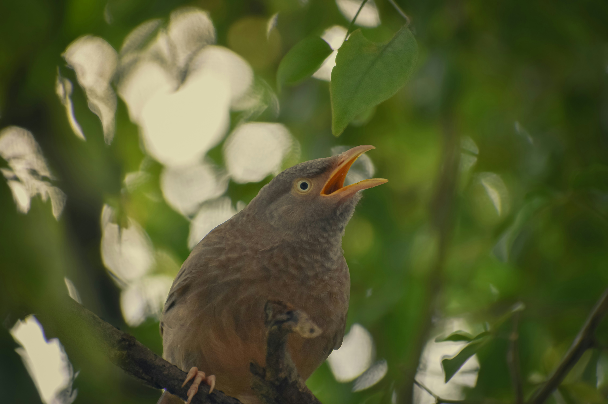

The Jungle Babbler is a social, noisy bird commonly seen moving through vegetation in small groups. Its grey-brown plumage is relatively plain, but its lively behaviour and constant chatter make it easy to recognize. Groups forage together on the ground and in shrubs, searching for insects, seeds, fruit, and other food. They are common in gardens, woodland, scrub, farmland, and urban areas. Compared with the similar Puff-Throated Babbler, it is distinguished by the combination of features described above. Its preference for scrub, gardens, woodland, farmland, parks, and urban areas also helps separate it from species that use different habitats. Its characteristic behaviour, including highly social and usually travels in noisy groups, provides another useful field clue. Taken together, these differences make it easier to distinguish from similar species when the bird is seen clearly.